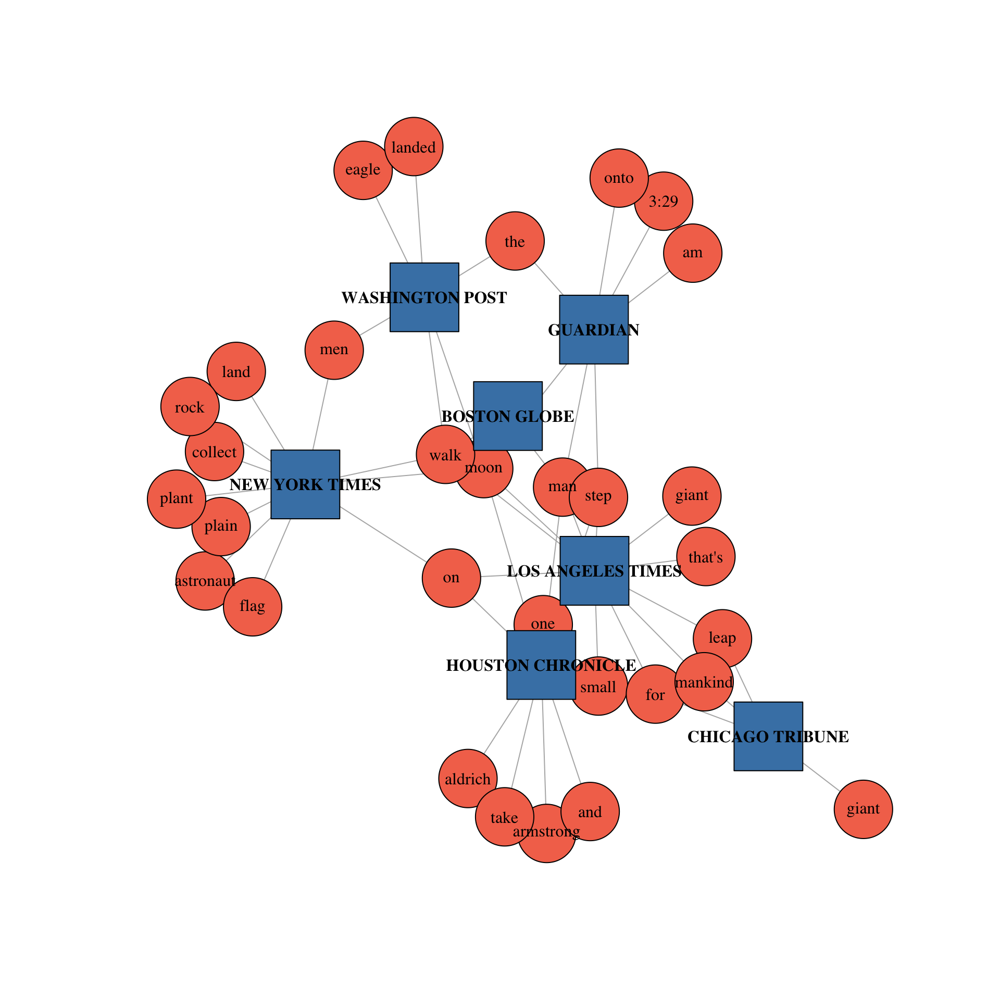

Lesson 9:
Visualising and Analysing Text Data
Content
- Introduction Text Visualisation
- Text data
- Text Visualisation Methods
- Tag Cloud
- Wordle
- Word Tree
- Phrase Nets
- R Packages for Text Visualisation
Introduction to Text Visualisation
History of text
Text as historical archive
Text as a mode of communication

Textual data for business intelligence analytics
Why Visualise Text?
- Understanding – get the “gist” of a document
- Grouping – cluster for overview or classification
- Compare – compare document collections, or
- Inspect evolution of collection over time
- Correlate – compare patterns in text to those in other data, e.g., correlate with social network
Levels of Text Representation
- Lexical level, transforming a string of characters into a sequence of atomic entities, called tokens.
- Syntactic level, identifying and tagging (anotating) each token’s functions.
- Semantic level, extracting of meaning and relationships between pieces of knowledge derived from the structures identified in the syntactical level.
Fundamental of Text Visualisation
Be warn, not all text are written in English and in digital forms!
Text Visualisation Methods
- Tag Cloud
- Wordle
- Word Tree
- Phrase Nets
Tag Cloud
- A tag cloud (word cloud, or weighted list in visual design) is a visual representation for text data, typically used to depict keyword metadata (tags) on websites, or to visualize free form text.
- ‘Tags’ are usually single words, normally listed alphabetically, and the importance of each tag is shown with font size or color.
Source: Tag cloud
Application of Tag Cloud I: Branding
- One-word tag cloud of DBS’s corporate values statement created using Many Eyes.
Application of Tag Cloud I: Branding
- Two-word tag cloud of DBS’s corporate values statement created using Many Eyes.
Wordle
- A toy for generating “word clouds” from text that you provide
Word Clouds of Corporate Values Statements
Word Tree
- A visual search tool for unstructured text, such as a book, article, speech or poem. It lets you pick a word or phrase and shows you all the different contexts in which the word or phrase appears.
- The contexts are arranged in a tree-like branching structure to reveal recurrent themes and phrases.
Source: wordtree
Phrase Net
- A phrase net diagrams the relationships between different words used in a text. It uses a simple form of pattern matching to provide multiple views of the concepts contained in a book, speech, or poem.
Phrase Net
Words separate by the keyword “and”
Words that directly follow one another
Parallel Tag Cloud
Story Tracker: Main View

R packages for Text Visualisation
- ggwordcloud: a word cloud geom for ggplot2
- TextPlot: An R package for Visualizing Text Data
- corporaexplorer: An R package for dynamic exploration of text collections
- LDAvis: An R package for interactive topic model visualization
wordcloud
- Provides functionality to create pretty word clouds, visualize differences and similarity between documents, and avoid over-plotting in scatter plots with text.
- Visit thislink for more information.
wordcloud2: Create Word Cloud by ‘htmlwidget’
- A fast visualization tool for creating wordcloud by using wordcloud2.js, ia JavaScript library to create wordle presentation on 2D canvas or HTML.
- It provides Shiny functions.
- Visit this link for more information.
ggwordcloud: a word cloud geom for ggplot2
- ggwordcloud provides a word cloud text geom for ggplot2.
- as an alternative to wordcloud and wordcloud2.
Wordcloud on Shiny
For live demo, visit this link
TextPlot: R Library for Visualizing Text Data
Aims to visualise complex relations in texts.
Provides functionalities for displaying text co-occurrence networks, text correlation networks, dependency relationships as well as text clustering.
Visit this link for more information.
This example visualises the result of a text annotation which provides parts of speech tags and dependency relationships.
TextPlot
- This example shows plotting a biterm topic model which was pretrained and put in the package as an example.
TextPlot
- The following graph shows how frequently adjectives co-occur across all the documents.
corporaexplorer: An R package for dynamic exploration of text collections
- corporaexplorer is an R package that uses the Shiny graphical user interface framework for dynamic exploration of text collections.
- It’s intended primary audience are qualitatively oriented researchers who rely on close reading of textual documents as part of their academic activity.
textnets
- R package for automated text analysis using network techniques.
- Visit the github repository for more information.
- Notice that this package is not on cran yet. You need to install it by using the code install_github(“cbail/textnets”).
Reference: Bail, Christopher A. (2016) “Combining Network Analysis and Natural Language Processing to Examine how Advocacy Organizations Stimulate Conversation on Social Media.” Proceedings of the National Academy of Sciences, 113:42.

LDAvis
- R package for interactive topic model visualization.
- Visit the github repository and cran for more information.
Source: For live demo, visit this link.
References
Cao, Nan and Cui, Weiwei (2016) Introduction to text visualization, Springer. This book is available at smu e-collection.